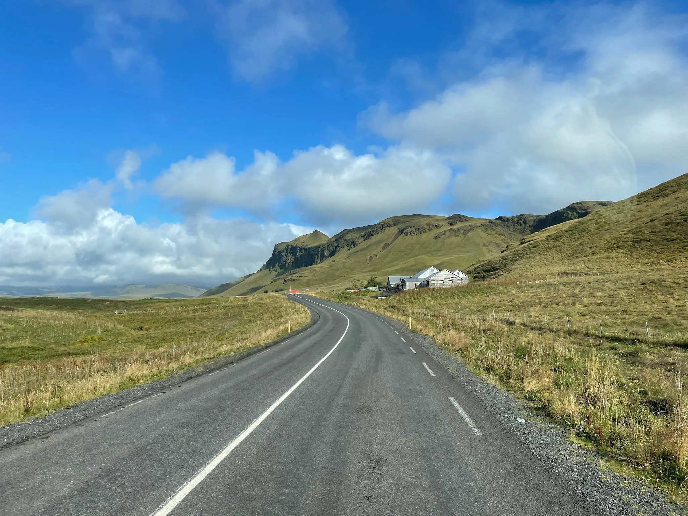

PeoplePPL
PeoplePPL
Issue No. 0112 photographs
Iceland
September 2024
Roads that keep going, canyons cut by rivers, waterfalls, farms at the foot of the mountains and long sunsets over the sea. Twelve photographs.
Contributors
Núria Campins Ferregut, Xisca Vaquer Oliver, Jaume Amengual Sanchez and Pau Ferriol Ferre
